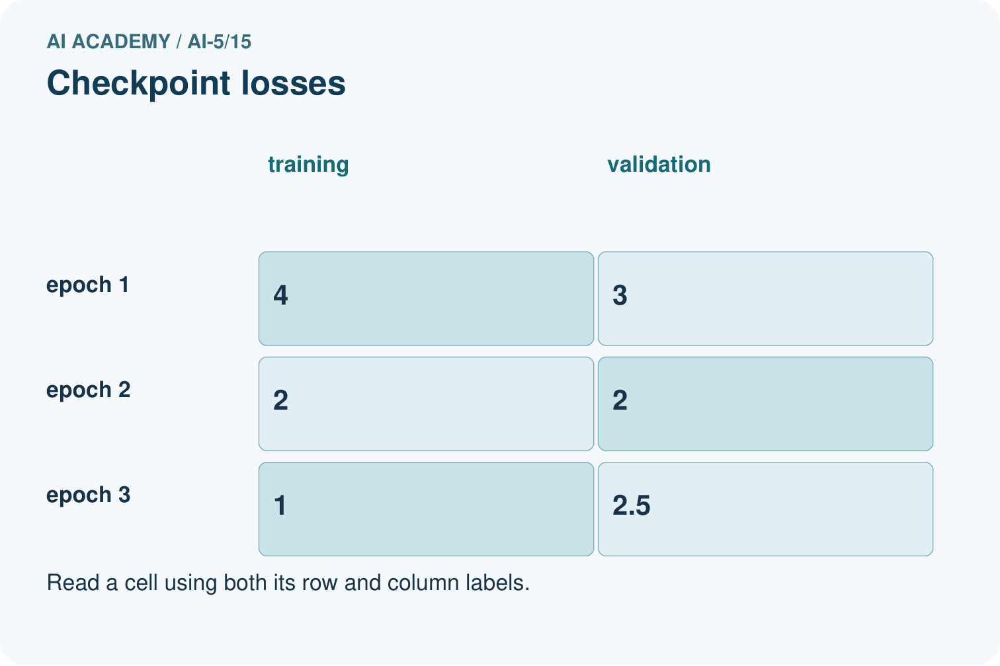
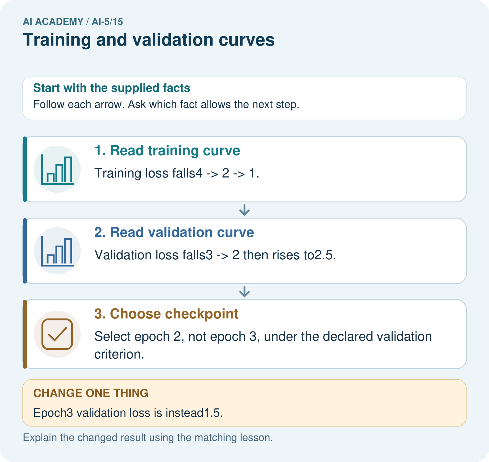

AI Academy · Level 5 · Grade 10 · Week 15 · Student lesson
Training and validation curves
Learn to understand, design, build, test and explain AI systems responsibly.
Project: Image-pattern Network Investigation
Before you start
Why does the lowest training loss in a learning-rate experiment not establish the best performance on new examples?
Plan time to read, investigate and explain. Keep predictions separate from observations.
Student lesson · 1 of 14
Your mission
Your learning target
I can compute comparable training and validation losses at saved checkpoints.
I can choose among observed checkpoints using a declared validation rule.
I can distinguish development evidence from final test evidence.
Remember before reading
Close your notes first. A rough first answer helps us choose the right starting point; it is not a score for your ability.
Without opening the old lesson, explain one key idea from Learning rate experiments. Give an example and a mistake that the idea helps you avoid.
Without opening the old lesson, explain one key idea from Training a small network. Give an example and a mistake that the idea helps you avoid.
Without opening the old lesson, explain one key idea from Slopes and local change. Give an example and a mistake that the idea helps you avoid.
After trying, check the relevant lesson or ask your teacher. Change the part of your explanation that the evidence shows was wrong.
This week you will practise:
Compute comparable training and validation losses at saved checkpoints
Choose among observed checkpoints using a declared validation rule
Distinguish development evidence from final test evidence
Retrieve what you already know
Why does the lowest training loss in a learning-rate experiment not establish the best performance on new examples?
This week’s end goal
By the end, I can explain training and validation curves using a traced example and a stated limitation.
Student lesson · 2 of 14
Notice the evidence
Keep the restricted network h = ReLU(x), y = vh, with only v trained. Training pairs remain (1, 2) and (2, 4). Start v = 0 and make four full-data updates at rate 0.1. Save states v = 0, 1, 1.5, 1.75 and 1.875. At each saved state, evaluate both splits without changing v during evaluation.
For this deliberately constructed demonstration, validation pairs are (3, 4.5) and (4, 6). Their targets follow a different slope from the training pairs. This makes the two trends disagree visibly; it is not evidence that these few rows represent a real population. Validation labels do not enter the gradient.
| Updates | v | Training MSE | Validation MSE |
|---|---|---|---|
| 0 | 0 | 10 | 28.125 |
| 1 | 1 | 2.5 | 3.125 |
| 2 | 1.5 | 0.625 | 0 |
| 3 | 1.75 | 0.15625 | 0.78125 |
| 4 | 1.875 | 0.0390625 | 1.7578125 |
Both columns use ordinary MSE in the same target units, evaluated on their own fixed rows. Training MSE is 2.5(v - 2) squared; validation MSE is 12.5(v - 1.5) squared. Different input values and target rules affect the loss levels. A gap alone does not identify its cause.
Student lesson · 3 of 14
See how it works
For checkpoint 3, v = 1.75. Training predictions are [1.75, 3.5], residuals [-0.25, -0.5], and MSE 0.15625. Validation predictions are [5.25, 7], residuals [0.75, 1], and MSE 0.78125. All four predictions must use the same saved value.
def mse(v, rows):
if not rows:
raise ValueError("Need evaluation rows")
return sum((v * max(0.0, x) - target) ** 2
for x, target in rows) / len(rows)
train = [(1.0, 2.0), (2.0, 4.0)]
valid = [(3.0, 4.5), (4.0, 6.0)]
checkpoints = [0.0, 1.0, 1.5, 1.75, 1.875]
validation_losses = []
for step, v in enumerate(checkpoints):
validation_losses.append(mse(v, valid))
print(step, mse(v, train), mse(v, valid))
best = min(range(len(checkpoints)),
key=lambda i: (validation_losses[i], i))
print("Selected checkpoint", best) # 2The code evaluates supplied checkpoints; it does not train on validation data. It assumes finite numeric pairs and selects the lowest observed validation MSE, breaking exact ties in favour of the earlier checkpoint. The rule is chosen before inspecting the values.
Connect the picture and the explanation
Point to the input, the deciding step and the result in this week’s visual. Explain the same step in ordinary words. A picture helps when you can say what each part represents.
Student lesson · 4 of 14
Compare the cases
Compare a familiar case with a changed case
Observed validation MSE at checkpoints 0 to 4 is [5, 2, 1, 1, 1.2]. Lowest loss wins with earlier exact ties. Which checkpoint is selected? What if training loss is lowest at checkpoint 4?
Change one thing in the pictured case
Change: Epoch3 validation loss is instead1.5.
Prediction: Select epoch 3 under the unchanged criterion.
Reason: Its measured validation loss is now below epoch 2’s2; the training curve alone never settled selection.
Student lesson · 5 of 14
Words that unlock the idea
| Word | Meaning |
|---|---|
| Checkpoint | Saved model parameters and the information needed to identify a training state |
| Training curve | A record of a training measure at successive saved states |
| Validation curve | A record of a development measure on separate examples at those states |
| Selection rule | A declared procedure for choosing among candidate models or checkpoints |
Student lesson · 6 of 14
Follow a worked example
Later updates improve only one split
This chart shows checkpoints 2 to 4 only, on one MSE scale from 0 to 2. Circles and a solid line mark training; squares and a dashed line mark validation. Lines connect measured checkpoints, not additional evaluations. The full table includes checkpoints 0 and 1.
Learn from the worked case
Cover the result before checking it. Say what is given, choose the procedure, and follow one step at a time. Then uncover the result and explain your first mismatch. Ask why a step is allowed, not only what number it produces.
A pictorial worked case: Training and validation curves
Plot training and validation loss for checkpoints before opening final cases.
The facts we will use
Supplied checkpoint losses: epoch 1 train4, val3; epoch 2 train2, val2; epoch 3 train1, val2.5. Selection: smallest validation loss.
All inputs and outcomes in this worked example are invented classroom data; no real model run is claimed.


Read the picture one step at a time
Why this result follows
The training curve measures fit to examples used for learning. The validation curve measures a separate set used to choose a checkpoint. The final training loss is smallest here, but its validation loss has risen. Under the supplied selection rule, keep checkpoint two. A later final test must remain outside both learning and checkpoint selection.
What this example does not establish
A single curve has sampling and run variability; validation-selected checkpoints still require untouched final evidence.
Student lesson · 7 of 14
Find and repair a mistake
Falling training loss with rising validation loss can be consistent with overfitting, but it is not a complete diagnosis. In this example the split-specific target rules are known to differ. In another dataset, inspect representativeness, preprocessing, leakage, label quality and evaluation settings before attributing the pattern to model capacity alone.
Evaluate comparable quantities: do not compare a training sum with a validation mean, or a training objective containing a penalty with unpenalised validation MSE. Keep the row sets fixed across checkpoints. Do not mix losses recorded before each batch update with a full-split evaluation of the final checkpoint.
Locate the earliest unsupported step
A training report shows sum of squared errors 12 over six rows. Validation shows mean squared error 3 over two rows in the same target units. A learner says training error is four times larger. Repair the comparison.
Student lesson · 8 of 14
Practise together
At v = 1, compute both validation predictions, residuals and MSE on (3, 4.5) and (4, 6).
Practise with less help: Use the declared rule
Use workbook W2 for the connected example “Training and validation curves”. First fill the input and rule boxes. Try the middle steps before asking for a hint. After a hint, try the next step yourself.
| Plan | Do | Check |
|---|---|---|
| What is given? Which rule or procedure applies? | Record each intermediate step. | Does the result follow? What remains unknown? |
Explain your trace to a partner. Your partner points to one step to check. Swap roles on the next case. Each person writes their own explanation.
Check your reasoning
Use the worked case for Training and validation curves. Proposed explanation: “The last checkpoint is always best”. Decide whether this explanation is supported. Point to the step or supplied fact that decides; explain your repair if needed.
Answer on your own before discussion. If you are unsure, say which step you need help with.
Explain the picture
Can the original epoch 3 training loss 1 justify claiming best generalisation? Point to the relevant step in the picture, then write the changed result and the rule or evidence that supports it.
This is supported practice. Keep the separately named independent case for an attempt before feedback.
Student lesson · 9 of 14
Run the investigation
Predict, investigate and preserve the evidence
Observed validation MSE at checkpoints 0 to 4 is [5, 2, 1, 1, 1.2]. Lowest loss wins with earlier exact ties. Which checkpoint is selected? What if training loss is lowest at checkpoint 4?
def mse(v, rows):
if not rows:
raise ValueError("Need evaluation rows")
return sum((v * max(0.0, x) - target) ** 2
for x, target in rows) / len(rows)
train = [(1.0, 2.0), (2.0, 4.0)]
valid = [(3.0, 4.5), (4.0, 6.0)]
checkpoints = [0.0, 1.0, 1.5, 1.75, 1.875]
validation_losses = []
for step, v in enumerate(checkpoints):
validation_losses.append(mse(v, valid))
print(step, mse(v, train), mse(v, valid))
best = min(range(len(checkpoints)),
key=lambda i: (validation_losses[i], i))
print("Selected checkpoint", best) # 2| Record | Your evidence |
|---|---|
| Given input and fixed rule | |
| Prediction before checking | |
| Actual result, or “not run” | |
| First mismatch and one explanation | |
| Boundary or missing input and expected response |
On paper, trace the supplied procedure. If code is provided, predict before running it in a local practice file. Never write an expected answer as though it were an observed run.
Plan → try → check
Before trying: what do I expect, and why? While trying: which step could first go wrong? Afterwards: what did I actually observe, and what should change? Keep “not run” if you only traced the procedure.
Student lesson · 10 of 14
Build your understanding
Explain → apply → challenge
At v = 1, compute both validation predictions, residuals and MSE on (3, 4.5) and (4, 6).
A training report shows sum of squared errors 12 over six rows. Validation shows mean squared error 3 over two rows in the same target units. A learner says training error is four times larger. Repair the comparison.
Training loss falls while validation loss rises. Give two checks before declaring model complexity the cause, and explain why repeatedly selecting with validation makes it development evidence.
Student lesson · 11 of 14
Connect your project
Add a labelled training and validation curves evidence sheet to Image-pattern Network Investigation. Show how you can compute comparable training and validation losses at saved checkpoints. Use the supplied fictional case and keep its inputs, intermediate steps, calculation or prediction, and limitation. Connect this record to last week’s record; a matching answer without a trace is insufficient.
| Project evidence | Record |
|---|---|
| Component and version | |
| Inputs permitted at prediction time | |
| Trace and comparison with earlier work | |
| Failure, limit and human review |
Evidence for your project
For your Image-pattern Network Investigation, save the input, procedure, observed result and limitation of this check. Label this worked example as practice; use a different, previously unreviewed case when checking independent understanding.
Student lesson · 12 of 14
Show what you know
Restore checkpoint 2, v = 1.5, if following the declared rule. Its zero validation MSE is a result on two constructed development examples. Choosing this checkpoint using those examples makes them part of model selection. After all choices are frozen, a separate untouched test set can provide final evidence within its own coverage limits.
Next week adds a weight penalty and an early-stopping policy, keeping their roles distinct.
Training loss falls while validation loss rises. Give two checks before declaring model complexity the cause, and explain why repeatedly selecting with validation makes it development evidence.
Student lesson · 13 of 14
Study a complete case
Complete evidence record
Later updates improve only one split
This chart shows checkpoints 2 to 4 only, on one MSE scale from 0 to 2. Circles and a solid line mark training; squares and a dashed line mark validation. Lines connect measured checkpoints, not additional evaluations. The full table includes checkpoints 0 and 1.
Follow the input through the stated procedure to its result. Cover the result first, predict it, then explain every intermediate step. The text/table accompanies the figure so the example can be read without colour.
Student lesson · 14 of 14
Try a new case independently
Independent case: Evaluate new checkpoints independently
Use h = ReLU(x), y = vh, candidate v values 1, 1.5 and 2. Training pairs are (1, 2), (2, 4); validation pairs are (1, 1), (2, 2). Calculate both MSE columns and select by minimum validation MSE. Explain the disagreement with selection by training loss.
Attempt this case before feedback. Record any help. Earlier examples below are further practice; a case already practised with feedback cannot establish fresh transfer.
Attempt this without hints
Use h = ReLU(x), y = vh, candidate v values 1, 1.5 and 2. Training pairs are (1, 2), (2, 4); validation pairs are (1, 1), (2, 2). Calculate both MSE columns and select by minimum validation MSE. Explain the disagreement with selection by training loss.
Record support used: none, hint or teacher explanation. After feedback, a different case is needed to demonstrate independence.
Use feedback to improve
Attempt the independent case before hints. Record whether you worked alone, used a hint or followed a model. After feedback, fix the first unsupported step and explain why it changed. A later check uses a changed case, not a copied answer.